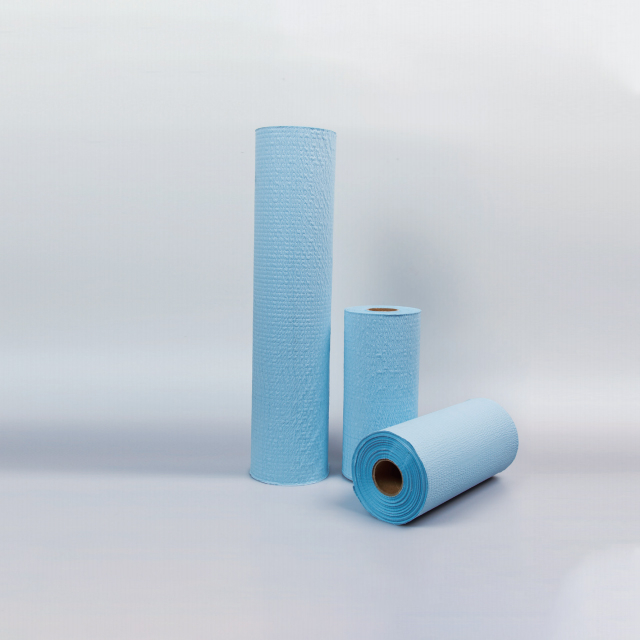

Every examination room, clinic, dental surgery, physiotherapy centre, and beauty salon shares one common requirement: a clean, hygienic surface for each patient or client. Disposable couch rolls — also known as examination table paper, clinic bed rolls, or treatment table covers — provide the simplest and most cost-effective solution. A fresh sheet is unrolled between every appointment, creating a reliable barrier that protects both the patient and the underlying furniture.
Despite their ubiquity, couch rolls are often an afterthought in procurement planning. Yet choosing the right material, width, and dispensing system can meaningfully improve patient experience, reduce waste, and lower per-patient costs. This guide is written for facility managers, clinic operators, procurement specialists, and medical distributors who want to make informed purchasing decisions.
Why Couch Rolls Are Essential
The purpose of a couch roll is straightforward but critical:
- Infection prevention. A fresh paper barrier between patients eliminates the risk of cross-contamination from skin contact, bodily fluids, or environmental pathogens on the examination surface. This is the single most important reason for their universal adoption in healthcare.
- Patient comfort and dignity. Patients and clients feel more confident lying on a clean, dry surface. A visible sheet change between appointments signals professionalism and hygiene-consciousness, building trust in the provider.
- Equipment protection. Examination tables and treatment beds represent a significant capital investment. Couch rolls protect vinyl, leather, and fabric surfaces from oils, lotions, creams, blood, wound exudate, and cleaning chemicals that can degrade upholstery over time.
- Rapid turnover. Unlike fabric covers that require laundering, couch rolls are torn off and replaced in seconds. In high-throughput environments — urgent care clinics, vaccination centres, physiotherapy practices, and beauty salons — this speed is operationally essential.
- Regulatory compliance. Many healthcare regulatory frameworks and accreditation standards (such as CQC in the UK, ACHS in Australia, and JCI internationally) require documented infection control practices, including single-use surface covers in patient examination areas.
Material Types: Paper, Tissue-Reinforced, and SMS
Disposable couch rolls are manufactured from several material options, each suited to different use cases and budgets:
Plain Paper Couch Rolls
Made from medical-grade crepe or tissue paper, plain paper rolls are the most economical option. They are lightweight, absorbent, and ideal for low-moisture environments:
- Crepe paper. Features a crinkled texture that provides slight cushioning and improves grip, reducing slippage when patients shift position. Typical basis weight is 28-35 gsm.
- Smooth tissue paper. A flat, soft surface that is comfortable against the skin. Commonly used in beauty salons, spa settings, and low-risk clinical environments. Basis weight ranges from 18-25 gsm.
- Printed or embossed options. Some manufacturers offer rolls with subtle patterns, logos, or colour accents (white, blue, green) to match clinic aesthetics.
Tissue-Reinforced Couch Rolls
These rolls combine a layer of tissue paper with a reinforcing mesh or scrim layer, creating a product with improved strength and liquid resistance:
- Two-layer construction. The top tissue layer provides a soft patient-facing surface, while the reinforced backing adds tear resistance and prevents liquids from penetrating to the examination surface below.
- Higher wet strength. Unlike plain paper, which disintegrates when wet, tissue-reinforced rolls maintain integrity during procedures involving fluids, gels, or lotions.
- Ideal for physiotherapy, dermatology, and dental clinics. Where massage oils, ultrasound gels, or dental materials are routinely used, the reinforced layer prevents seepage onto the table surface.
- Basis weight typically 40-55 gsm. Heavier than plain paper but still economical for daily use in medium- to high-volume clinical settings.
SMS (Spunbond-Meltblown-Spunbond) Couch Rolls
SMS is a nonwoven fabric construction that offers the highest performance among disposable couch roll materials:
- Superior fluid barrier. The meltblown middle layer provides genuine liquid repellency, not just absorption. This makes SMS rolls suitable for minor surgical procedures, wound care, and other applications with meaningful fluid exposure.
- Lint-free surface. Unlike paper products, SMS does not shed fibres, which is critical in sterile environments, operating theatres, and laboratories where particulate contamination must be minimised.
- Soft cloth-like feel. Patients and clients perceive SMS as a premium, comfortable surface — significantly softer and more textile-like than paper alternatives.
- Basis weight typically 40-60 gsm. Slightly heavier than tissue-reinforced options but offering a noticeably different performance profile.
| Property | Plain Paper | Tissue-Reinforced | SMS Nonwoven |
|---|---|---|---|
| Basis weight | 18-35 gsm | 40-55 gsm | 40-60 gsm |
| Fluid resistance | Absorbent only | Partial barrier | Fluid repellent |
| Tear strength | Low to moderate | Moderate to high | High |
| Lint generation | Yes | Low | Lint-free |
| Surface feel | Paper | Slightly textured | Soft, cloth-like |
| Cost per metre | Lowest | Low to moderate | Moderate |
| Best suited for | General consultations, beauty salons | Physiotherapy, dental, dermatology | Minor surgery, wound care, sterile areas |
Widths, Lengths, and Roll Dimensions
Selecting the correct roll width and length ensures adequate coverage without excessive waste:
- Standard widths. The most common widths are 50 cm (20"), 60 cm (24"), and 70 cm (27.5"). A 50 cm width suits narrow examination tables and treatment chairs. 60 cm is the industry standard for general-purpose examination beds. 70 cm provides full coverage for wider treatment tables, massage beds, and bariatric examination surfaces.
- Roll lengths. Standard roll lengths range from 60 metres to 200 metres. Shorter rolls (60-80 m) are lighter and easier to handle, making them suitable for smaller clinics with limited storage space. Longer rolls (100-200 m) reduce the frequency of roll changes and offer better cost-per-metre economics for high-volume facilities.
- Core diameter. Most rolls use a 38 mm (1.5") or 50 mm (2") cardboard core, compatible with standard dispensing hardware. Ensure the core size matches your existing dispenser before ordering.
- Perforated vs. continuous. Perforated rolls have tear lines at fixed intervals (typically 40-60 cm), allowing staff to tear off individual sheets without scissors or cutters. Continuous rolls require a cutting mechanism but offer more flexible sheet lengths. Perforated rolls are preferred in most clinical settings for speed and convenience.
Dispensing Methods
How the couch roll is dispensed affects both workflow efficiency and waste:
- Wall-mounted dispensers. Fixed brackets mounted at the head or foot of the examination table hold the roll and allow smooth unrolling. Some models include a built-in cutting edge for clean tears. Wall-mounted systems are the most common in clinics and hospitals.
- Free-standing dispensers. Portable stands with a roll holder and cutting bar can be positioned anywhere. Ideal for mobile healthcare providers, home-visit practitioners, and multi-room facilities that share a single roll between spaces.
- Under-table mounting. Compact dispensers that attach to the underside of the examination table keep the roll out of sight and within easy reach. This approach is popular in dental surgeries and physiotherapy clinics.
- No dispenser (hand-torn). In budget-conscious settings, rolls are simply placed on the table and torn by hand. While functional, this method results in more uneven cuts, increased waste, and slower patient turnover.
"Installing wall-mounted dispensers in every examination room was one of the smallest investments we made with the biggest impact on patient perception. The clean, consistent sheet change between appointments looks professional and reassures patients immediately." — Practice Manager, General Practice Clinic
Sustainability Considerations
As healthcare facilities increasingly prioritise environmental responsibility, several factors influence the sustainability profile of couch rolls:
- Biodegradable materials. Plain paper and tissue-reinforced couch rolls are generally biodegradable and can be disposed of through standard waste streams. SMS nonwoven materials, being polypropylene-based, are not biodegradable but can sometimes be recycled through specialised programmes.
- Responsible sourcing. Look for paper products made from sustainably managed forests (FSC-certified) or recycled fibre content. Many manufacturers now offer eco-labelled ranges.
- Right-sizing. Using a narrower roll than needed generates waste (overhang that must be trimmed). Conversely, using a wider roll than necessary increases material consumption. Measure your tables carefully and match the roll width to the actual coverage area required.
- Optimised roll length. Longer rolls reduce cardboard core waste per metre of product. However, they must be compatible with your dispensing hardware and manageable by staff to handle and install.
Applications Across Industries
Couch rolls are not limited to hospitals and clinics. Their applications span multiple sectors:
- General practice and family medicine. Every patient examination requires a fresh surface cover. GP surgeries are among the highest-volume consumers of plain paper and tissue-reinforced rolls.
- Dental clinics. Dental chairs require narrow-width rolls (50 cm) that can be torn quickly between appointments. Tissue-reinforced materials are preferred due to exposure to water, saliva, and dental materials.
- Physiotherapy and sports medicine. Treatment tables need wider rolls (60-70 cm) with good fluid resistance for massage oils, heat packs, and strapping materials. Tissue-reinforced or SMS rolls are common choices.
- Beauty salons and spas. Massage tables, waxing beds, and facial treatment couches use couch rolls for hygiene and client comfort. Aesthetics matter here — printed or coloured rolls are popular.
- Veterinary clinics. Animal examination tables benefit from wider, stronger rolls (tissue-reinforced or SMS) that can handle moisture, fur, and occasional claws or teeth.
- Tattoo and piercing studios. Hygiene standards in body art are paramount. Couch rolls provide a single-use barrier on treatment beds and work surfaces, often in conjunction with plastic wrap and barrier films.
- Mobile healthcare and home visits. Portable practitioners carry individual pre-cut sheets or small rolls to create a clean examination surface wherever they work.
Procurement Tips for Bulk Buyers
For distributors and facility procurement teams, these practical considerations will help optimise cost and supply continuity:
- Standardise across rooms. Use the same width and material type wherever possible to simplify inventory management and reduce stock-keeping complexity.
- Calculate per-patient cost. Measure the average sheet length used per appointment and multiply by the roll's cost per metre. This reveals the true cost-per-patient and enables meaningful comparisons between products.
- Buy by pallet for volume discounts. Couch rolls are lightweight but bulky. Pallet-level orders typically offer 15-30% savings over case-level purchases and reduce per-unit freight costs.
- Check core compatibility. Before switching suppliers, confirm that new rolls match the core diameter of your existing dispensing hardware. Mismatched cores cause jams and require hardware replacement.
- Request samples. Evaluate tear strength, surface texture, and unrolling smoothness before committing to a large order. The best way to assess quality is to test the product in your actual clinical environment.
- Plan for storage. Rolls are bulky. Ensure adequate dry, clean storage space to accommodate your order quantity. Pallet dimensions and weight should be factored into your logistics planning.
Why Choose Newrise Medical
Newrise Medical supplies a comprehensive range of disposable couch rolls in plain paper, tissue-reinforced, and SMS nonwoven materials, across multiple widths and lengths to suit every clinical environment. Our products are manufactured under ISO 13485 certified quality management systems, ensuring consistent material performance and reliable supply.
We offer competitive pricing for bulk orders, OEM and ODM options for distributors looking to build their own brand, and responsive customer service from inquiry through delivery. Whether you need standard paper rolls for a GP clinic or premium SMS rolls for a surgical centre, we can provide the right product at the right price.